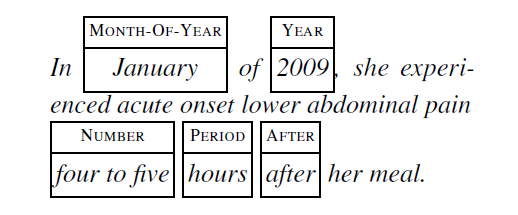

Overview
Data sharing restrictions are common in NLP datasets, particularly in the clinical domain.
Here, we propose a new shared task framework that asks participants to develop semantic annotation systems in face of data sharing constraints.
1. Goal of this SemEval Task:
To develop a system for a target domain when annotations exist for a related domain but cannot be distributed:
Participants will be given a model trained on the annotations of one domain.
Then, participants will be asked to make predictions of unlabeled target domain data
We propose two different semantic tasks to which this framework will be applied: negation detection and time expression recognition.
2. Subtask Explanation and Datasets :
2.1 Negation Detection
EXAMPLE: The sentence 'Has no diarrhea and no new lumps or masses' has two negation words (both no) and all three entities (diarrhea, lumps, masses) are negated. Participants were expected to treat it as "span-in-context" classification problem. The following example is a typical transformer-based encoding of this problem for the diarrhea event and the corresponding label is negated.
INPUT SENTENCE: Has no <e> diarrhea </e> and no new lumps or masses
DATASET:
1. Pre-trained model: Participants will be provided with a "span-in-context" classification models (XXX) trained on the 10259 instances (902 negated) clinical notes from Mayo Clinic.
2. Development Data for Practice Phase: i2b2 2010 Challenge Dataset containing 7038 entites. We simplify the classification label space to {negated, notnegated}.
3. Test Data for Evaluation Phase: Participants will be provided with raw text drawn from MIMIC corpus with entities of interest identified and asked to predict negation status of each entity
2.2 Time Expressions
EXAMPLE

DATASET:
1. Pre-trained model: Participants will be provided with a sequence tagging model (character-based FLAIR) trained on the 25,000+ time expressions in clinical portion of the SemEval 2018 Task 6.
2. Development Data for Practice Phase: the annotated news portion of the SemEval 2018 Task 6.
3. Test Data for Evaluation Phase: Participants will be provided with raw text drawn from MIMIC corpus and asked to predict time expression